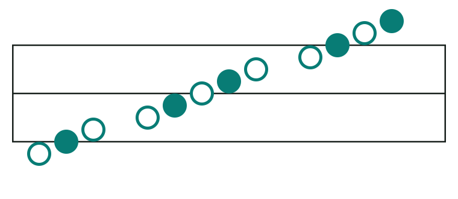

Tristaff puts pitch and time on one regular grid. You can start reading with two directions.
Rule: Up means a higher sound. Right means later in time. A note's height shows its pitch; its width shows how long it lasts.

Look Every step up in the bar means a higher sound. You will learn this pitch map in the next chapter.
Why make another way to write music?
Tristaff aims to make the first steps in reading music faster. Its rules repeat in the same way for every pitch, so there is less to remember at the start. It also aims to describe many kinds of music.
Pitch goes up
Pitch means how high or low a sound is.
Time goes right
A beat is a steady unit of time, like a clap.
Why is the page taller?
Each pitch gets its own height. That makes the pattern regular, but a Tristaff page may take more vertical space than a traditional music page.